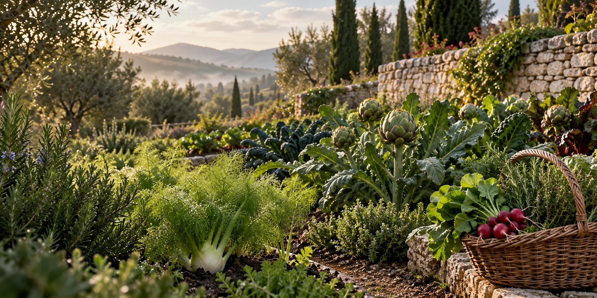

BIEN MANGER, CHAQUE JOUR / MEAL PREP
Your week.
Fully taken care of.
Organic, locally sourced, ready-to-eat meals with Chef Aurore’s French influence.
TWO WAYS TO ORDER
Choose your meals.
Or let the chef choose.
Select your Paleo or Keto meals à la carte, or subscribe for a weekly chef-selected plan prepared automatically to meet your requirements. Meals arrive individually packaged, ready for your refrigerator and the week ahead.
AIP, Vegan, Keto and custom dietary arrangements are available to discuss with the meal-prep team: (480) 771-5124 · mealprep@sapienskitchen.com. Tell us your requirements before ordering, and enter dietary restrictions and allergies during checkout.
- Minimum order
- 5 meals or $69.75 total
- Order deadline
- Sunday, 11 pm, for the following week
- Delivery
- Wednesday, noon–8 pm, as listed on the meal-prep overview
- Pickup
- Wednesday–Thursday, 4:30–10 pm, as listed on the meal-prep overview
| Menu | Protein | Carbs | Fat | Calories |
|---|---|---|---|---|
| Paleo | 40 g | 40 g | 20 g | 500 Cal |
| Keto | 40 g | 30 g | 35 g | 600 Cal |
These are the figures published by Sapiens Kitchen for its entrée selections. Ask the team for meal-specific ingredient or nutrition details.
READY WHEN YOU ARE
Warm, serve,
and enjoy.
The published reheating guide is 1 minute in a microwave, or 4 minutes in an oven at 350°F. Follow the instructions supplied with your meal and reheat thoroughly. Some protein selections have additional preparation notes on their menu listings.
Menus are updated every other Sunday after midnight. Choose entrées, soups and salads, extra proteins, vegetable sides, spreads and sauces, bread and desserts. Adjust quantities in your ordering cart and refresh the cart before checkout.
Delivery times differ between the original menu, subscription and ordering-policy pages. Review the complete delivery guide and confirm your final window with the team or at checkout.
THE SAPIENS WAY
Le plaisir, tout simplement.
French technique. Thoughtful ingredients. All the pleasure.
- Gluten-free
- Dairy-free
- Soy-free
- Sugar-free
- Seed oil-free